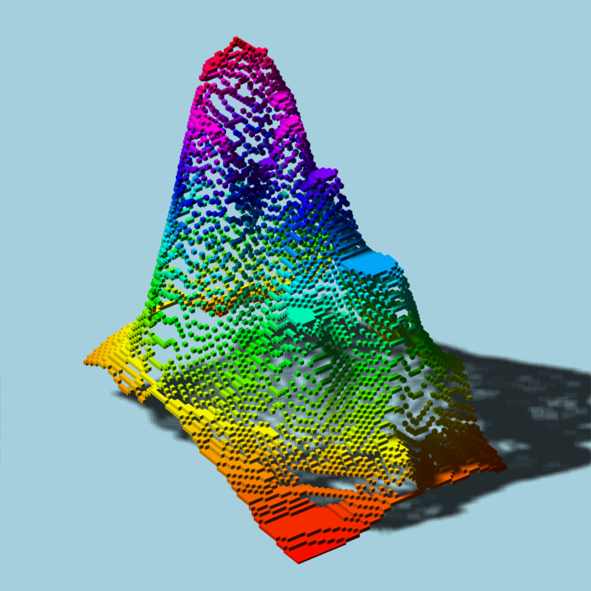

Fast generation of rayvertex scenes from a list of objects (much faster than calling
add_shape() on each object individually to build the scene). This returns a ray_scene object
that cdoes
scene_from_list(scene_list)ray_scene containing mesh info.
if(run_documentation()) {
#Build a scene out of cubes including 87 * 61 = 5307 objects
scene = list()
volcol = rainbow(103)
counter = 1
for(i in 1:nrow(volcano)) {
for(j in 1:ncol(volcano)) {
scene[[counter]] = cube_mesh(position = c(i,(volcano[i,j]-94),j),
material = material_list(diffuse = volcol[volcano[i,j]-92],
ambient = volcol[volcano[i,j]-92],
ambient_intensity = 0.2))
counter = counter + 1
}
}
#Quickly generate the
new_scene = scene_from_list(scene)
new_scene |>
rotate_mesh(c(0,10,0), pivot_point = c(44,0,31)) |>
add_shape(xz_rect_mesh(position=c(44,0,31),scale=500,
material = material_list(diffuse="lightblue",
ambient = "lightblue",
ambient_intensity = 0.2))) |>
rasterize_scene(lookfrom=c(500,500,500), lookat = c(44.00, 40.50, 31.00),
width=800,height=800, fov=0, ortho_dimensions = c(140,140),
light_info = directional_light(c(-0.6,1,0.6)))
}
